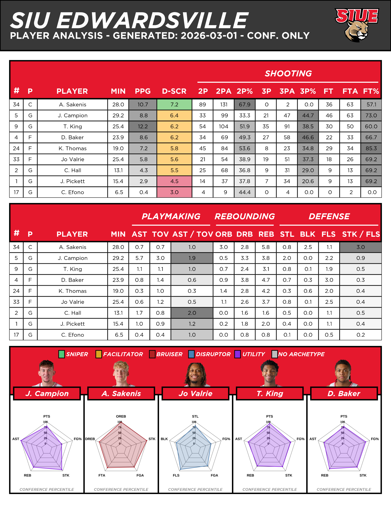
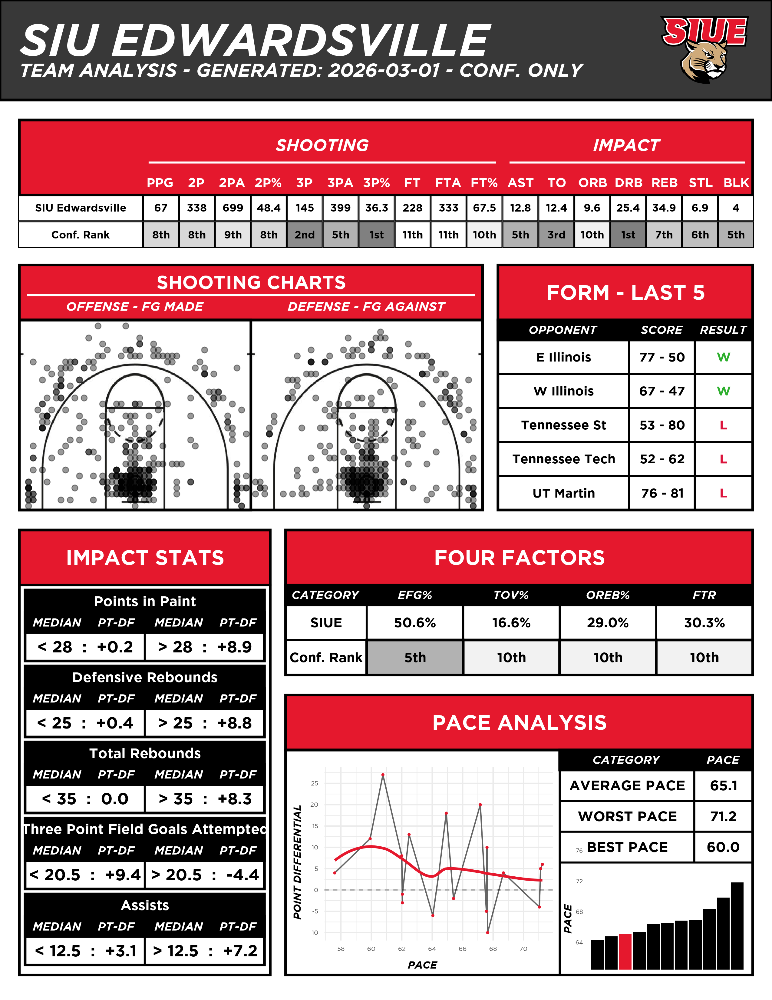
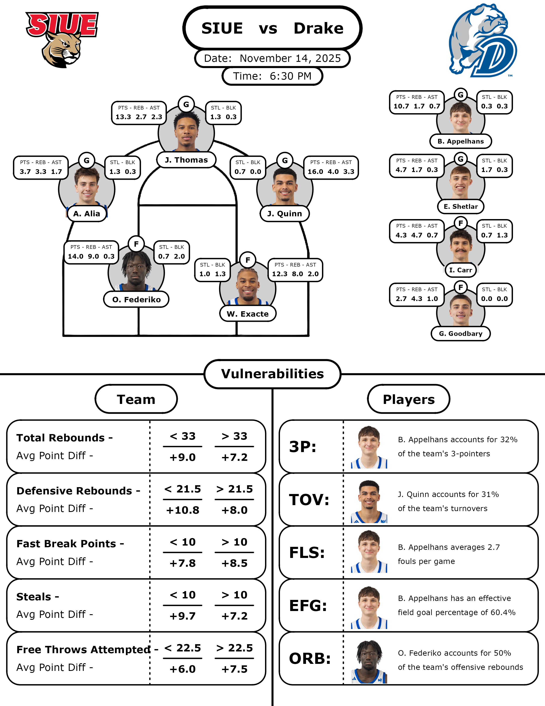

Overview
The summer before the 2025-2026 college basketball season I approached the athletic director and head coach of SIUE's Men's Basketball team to strategize how I could use my analytical skills to help the team succeed. After talking to head coach Brian Barone and assistant coach Colin Schneider, we were able to come up with a plan for pregame reports to help the coaches plan for their upcoming matchups and identify their opponents' strengths and weaknesses.
The final edition of my program receives the opponent's name as an input then creates two reports: player analysis report and team analysis report. These reports came a long way from the first iteration, but after receiving feedback from the coaches, athletic director, and other helpful contacts, I was able to improve my designs, analysis, and insights.
My experience with the SIUE Men's Basketball team has not only improved my coding skills, but also taught me how to interact with coaching staff to provide actionable data, while refining my ability to iterate based on professional feedback.
Gallery
Examples of the pregame reports I created for SIUE are shown below. The top two images are the updated reports after a lot of feedback. The bottom report is the initial design and analysis before receiving feedback.
Pregame Report - Revised Version


Pregame Report - Version 1
